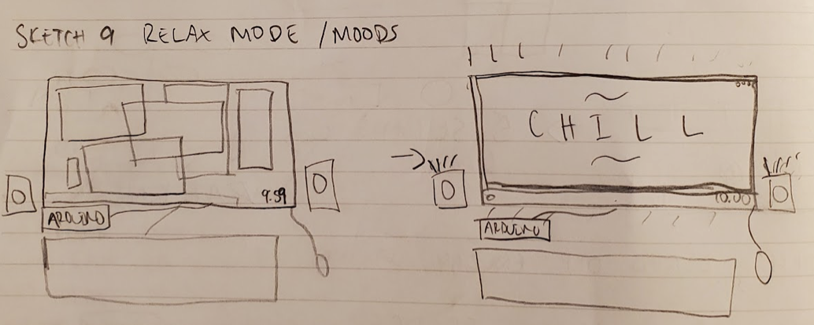
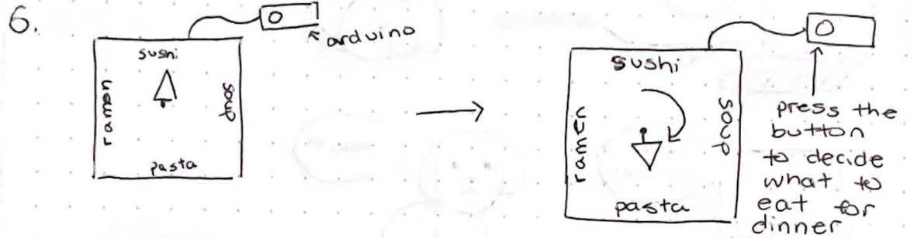
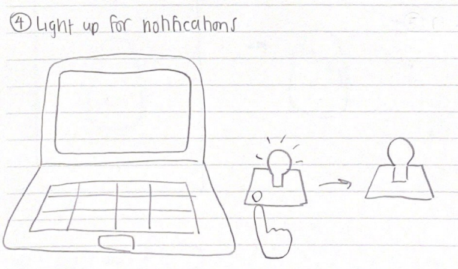
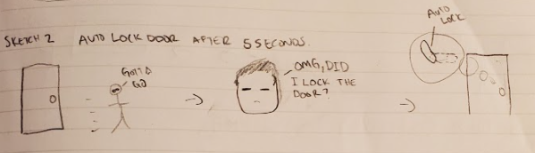

The first sketch solves the everyday problem of: “What tv show do I want to watch/have on in the background?” Here we have a device that allows us to choose between 3 presets. Once a preset show is chosen, simply click the button to start playing random
episodes.

Initial Idea Sketch 2 by Daniel
The second sketch solves the everyday problem of: “I need to wind down before I burnout.” Here the arduino is connected to a pc with multiple tabs open and the user having worked until 10PM into the evening. At 10 the arduino triggers the wind down protocol
and declutters the windows, changes the lights to be more soothing, and plays soft and relaxing music.

Initial Idea Sketch 3 by Sophia
The third sketch solves the everyday problem of: “I don’t know what to eat for dinner!” Here the arduino is connected to a board that has preset foods placed. Simply click the button to randomly choose a food to have for dinner!

Initial Idea Sketch 4 by Marela
The fourth sketch solves the everyday problem of: “I get too many distracting notifications on my desktop!” Here the arduino has a light source and a button that can be used to deal with these notifications. With this implementation, the notifications
are disabled on the computer and the prompts are instead sent to the arduino. The user can choose to dismiss the notifications at a click of a button, or to completely ignore the notifications by holding the button down for 3 seconds.

Initial Idea Sketch 5 by Daniel
The fifth sketch solves the everyday problem of: “Uh oh… did I lock the door?” Here is a short storyboard of a person leaving their place and then pondering whether or not they locked the door. This problem is solved with the arduino being programmed
together with the lock to automatically lock after 5 seconds if left in an unlocked position.